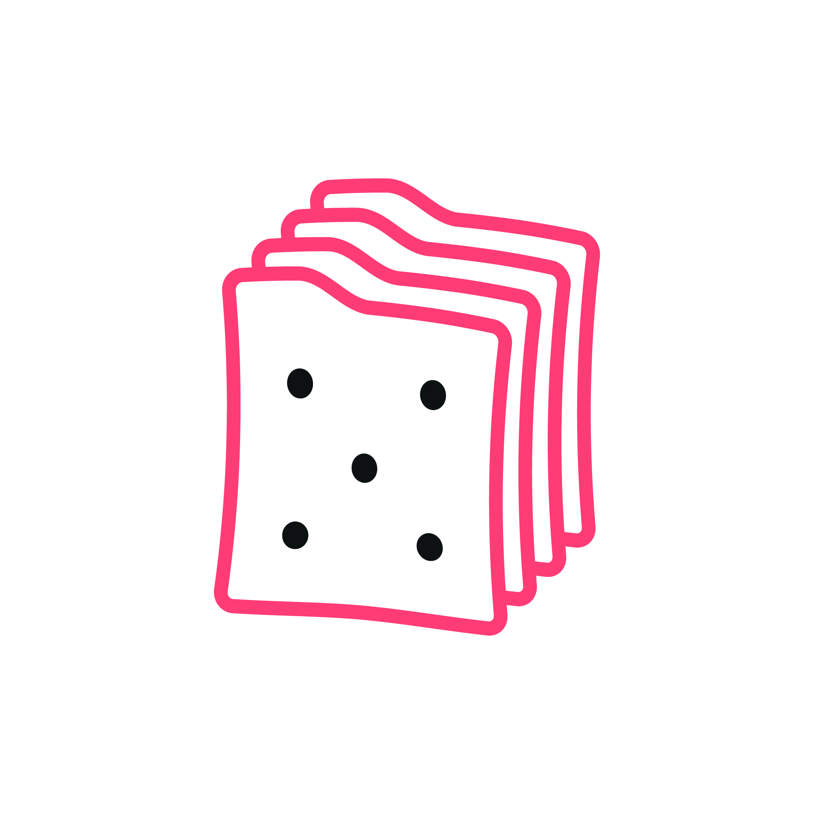
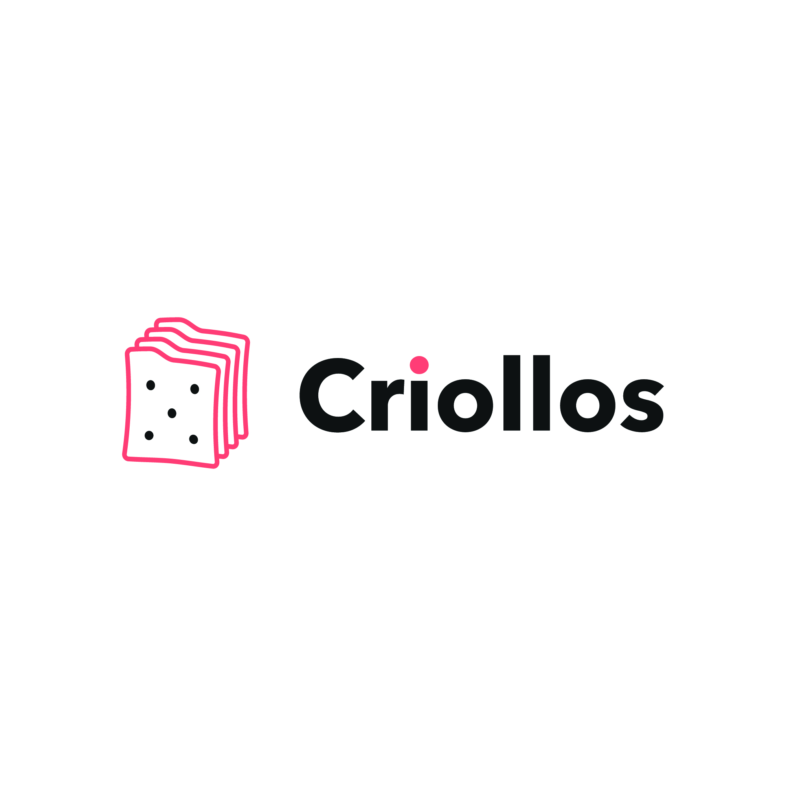
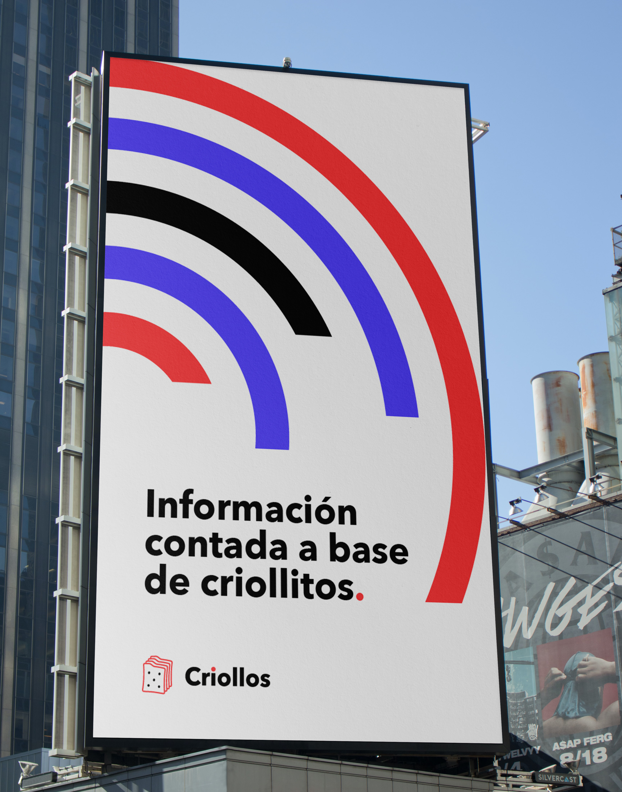
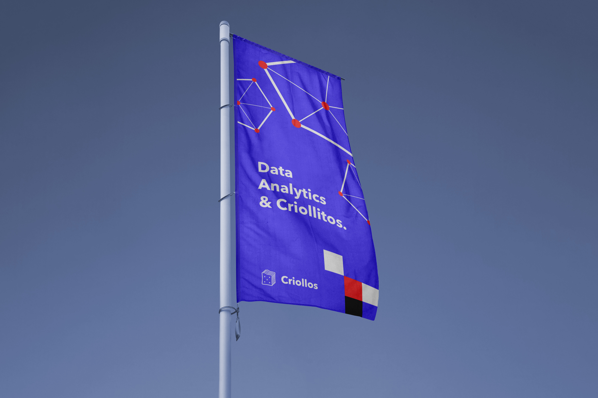
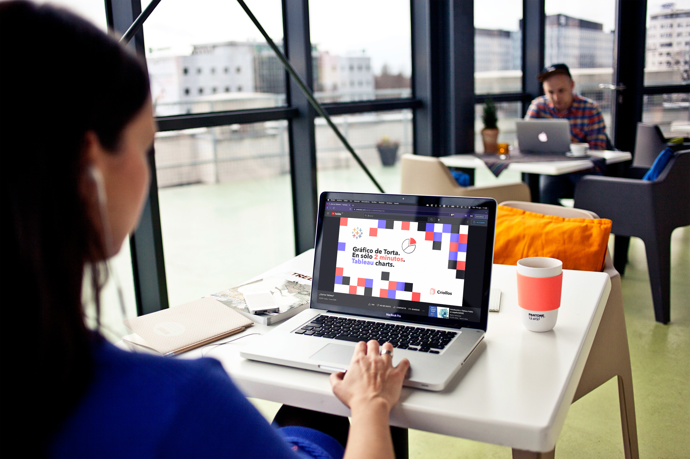

Criollos
Contar el mundo digital de manera simple y concreta. En un término argentino, explicarlo en criollo — con mate y criollitos de por medio.

Data analytics, en criollo
Desde cero · en pastafro.la
Elementos gráficos y piezas
Arranque de marca
Data analytics es una materia densa, y casi todo el material disponible está en inglés o escrito para gente que ya sabe.
Criollos enseña esa materia de otra forma: tutoriales cortos, en castellano, que resuelven una cosa concreta —cómo armar un gráfico de torta en Tableau en dos minutos. El proyecto no existía todavía, así que la marca tenía que instalar ese tono antes de que hubiera contenido para mostrar.
La promesa la escribieron ellos y me sirvió de brief: «Bajamos a tierra el mensaje y los conceptos para contarte de manera simple, la información que tanto necesitás».
Un criollito que también es un fichero.
El ícono tenía que leerse como criollito a primera vista y, en la segunda, entenderse que son ficheros apilados. Ahí queda dicho todo el proyecto: información técnica y una charla con mate, en la misma forma.


La pestaña de la galleta hace de lengüeta de carpeta y el punto de la i toma el rojo del trazo. Dibujado a mano alzada, para que la marca no se lea como software.
Pantone 178 C
C0 M76 Y55 K0
Pantone 2725 C
Neutral Black C
C0 M0 Y0 K90
Rojo y violeta en partes iguales, negro para los plenos y el blanco del papel como cuarto color. Los elementos gráficos —arcos concéntricos, redes de nodos, mosaicos— salen de ahí y arman piezas enteras sin necesidad de foto.
Bold
Geométrica y redonda: sostiene el tono conversado y aguanta un titular a tamaño de cartel.
Medium
Misma familia, un peso menos. Nada compite con el titular.



Cuando el proyecto es explicar algo difícil, el logo puede hacer la primera explicación.
El doble sentido del ícono ahorra el párrafo introductorio: quien lo ve ya entendió de qué se trata y con qué tono se lo van a contar. Todo lo demás —color, elementos, piezas— salió de sostener esa misma idea.
Desarrollo realizado en pastafro.la.